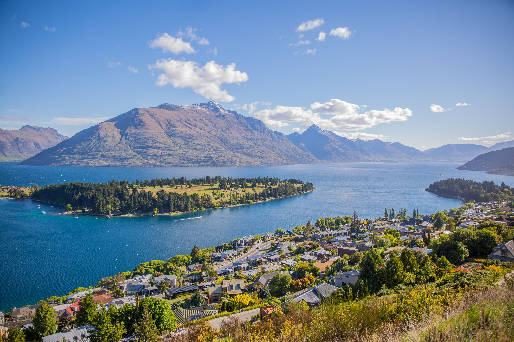

About Us
Our Vision
Our company vision is to bring nature to those who may be unable to access it. We want to bring nature to those who do not have the time or do not live close enough to experience the natural beauty of nature. We also inspire to keep the website up to date and show off different environments.


Why We Do This
The reason we are doing this is because New Zealand has many amazing places that many people would not be able to view due to their lifestyle or age. We wanted to bring the joy of nature to those around us while making it seem high tech. The reason we ended up settling on the name walking reprogramed is because we wanted to adjust how people view walking to include nature walks captured on video. We hope this will be enough to inspire others to go out and see these places for themselves.